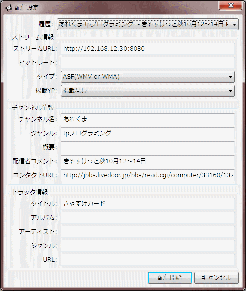
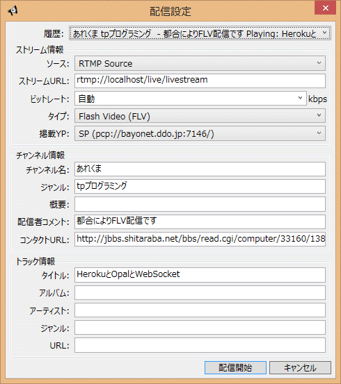
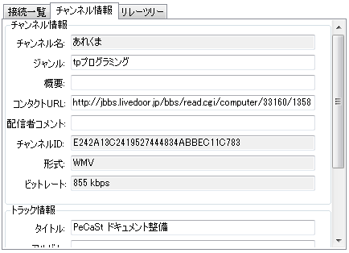
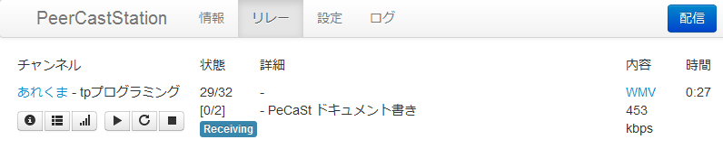
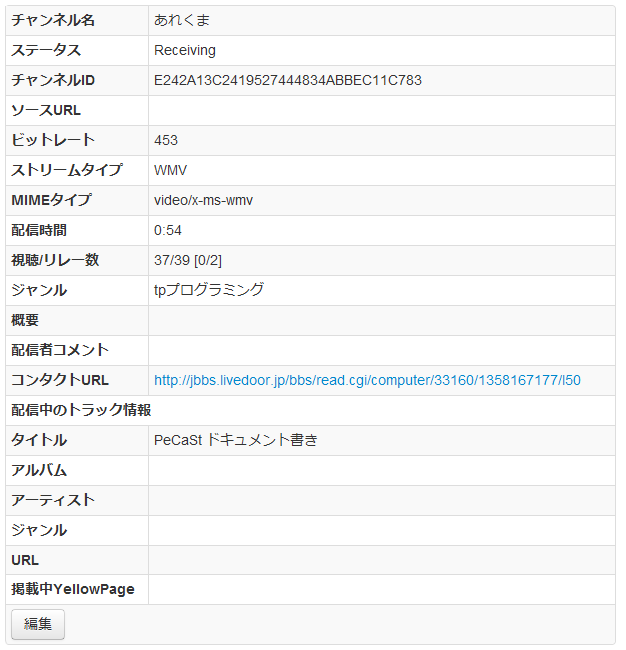
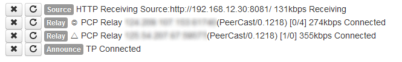

配信
配信方法 - GUI編
配信してYPに掲載するにはまずYPの設定を追加しましょう。YPの追加は設定のヘルプを参照してください。
配信するにはGUIのチャンネル一覧隣の配信…ボタンを押します。またはメニューからチャンネル(C)→配信(B)…を選択します。
HTTP配信
ここではHTTP配信(Windows Media EncoderやExpression Encoderからの配信)について説明します。RTMP配信については下の方を見てください。

| 履歴 | 以前に配信開始した時の設定の一覧です。いずれかを選択すると呼び出すことができます。通常は最大20件まで保存されますが、リストを表示した状態で右のハートマークをクリックするとお気に入り設定になり、20件とは別にずっと保存されるようになります。 |
| ソース | 配信する動画の取得方法を指定します。HTTP配信の場合はHTTPを選択します。 |
| ストリームURL | 配信する動画のURLを指定します。エンコーダによって指定された値(http://localhost:8080/など)を入れておきます。 |
| ビットレート | 通常は動画から取得される自動を選択しておけば大丈夫です。数値を指定すると(kbps単位で)動画の公称ビットレートと別な値を指定することができます。 |
| タイプ | ストリームURLで取得する動画のタイプを指定します。RAWは通常使用しないので、エンコーダに合わせて適切な物を選択してください。 |
| 掲載YP | 掲載先のYPを指定します。どのYPにも載せない場合は掲載無しを選択してください。載せたいYPがリストに無い場合は設定で追加してください。 |
| チャンネル名 | チャンネル名を指定します。他のチャンネル情報は記入しなくても配信開始できますが、チャンネル名は必ず入力する必要があります。 |
| ジャンル | チャンネルのジャンルを指定します。YPによってはここに適切な文字列を入れないと載らない場合があります。YPごとの掲載方法を参照してください。 |
チャンネル情報・トラック情報のうち、チャンネル名以外は配信中の変更が可能です。
HTTP配信の場合は、配信開始前に指定したURLでエンコーダがエンコードを開始している必要があります。
適切な値を入力したら配信開始ボタンを押してください。チャンネル一覧に配信開始したチャンネルが追加されます。 配信開始ができない場合は何ストリームURLが正しいか、チャンネル名が入力されているかを確認してください。
エンコーダからの動画取得ができていればチャンネルの状態がRECEIVINGになります。 それ以外の場合はエンコードが開始されていないかURLが間違っている可能性があるので確認してください。
RTMP配信
ここではRTMP配信(Open Broadcaster SoftwareやFlash Playerからの配信)について説明します。HTTP配信については上の説明を見てください

| 履歴 | 以前に配信開始した時の設定の一覧です。いずれかを選択すると呼び出すことができます。通常は最大20件まで保存されますが、リストを表示した状態で右のハートマークをクリックするとお気に入り設定になり、20件とは別にずっと保存されるようになります。 |
| ソース | 配信する動画の取得方法を指定します。RTMP配信をする場合はRTMP Sourceを選択してください。 |
| ストリームURL | エンコーダが接続するURLを指定します。ホスト名とポート番号(指定がなければ1935)を指定してください。それ以降の/live/livestreamのところは現状、何を設定しても見ていないのでそのままにしておきます。基本的には最初から入っている値(rtmp://localhost/live/livestream)のままで問題ありません。 |
| ビットレート | 通常は動画から取得される自動を選択しておけば大丈夫です。数値を指定すると(kbps単位で)動画の公称ビットレートと別な値を指定することができます。 |
| タイプ | RTMPの場合は何を選択してもFLVになります。気になる場合はFLVを選択しておいてください。 |
| 掲載YP | 掲載先のYPを指定します。どのYPにも載せない場合は掲載無しを選択してください。載せたいYPがリストに無い場合は設定で追加してください。 |
| チャンネル名 | チャンネル名を指定します。他のチャンネル情報は記入しなくても配信開始できますが、チャンネル名は必ず入力する必要があります。 |
| ジャンル | チャンネルのジャンルを指定します。YPによってはここに適切な文字列を入れないと載らない場合があります。YPごとの掲載方法を参照してください。 |
チャンネル情報・トラック情報のうち、チャンネル名以外は配信中の変更が可能です。
RTMP配信の場合は、PeerCastStationでの配信開始をしてからエンコーダでのエンコードを開始します。
適切な値を入力したら配信開始ボタンを押してください。チャンネル一覧に配信開始したチャンネルが追加されます。 配信開始ができない場合は何ストリームURLが正しいか、チャンネル名が入力されているかを確認してください。
配信開始をするとチャンネルの状態がSEARCHINGになります。この状態になったらエンコーダの配信先URLに指定したURL(rtmp://localhost/live/livestream)を入力してエンコードを開始してください。上手くいけばチャンネル状態がRECEIVINGになって配信が始まります。
配信開始後
配信開始後は通常のリレーと同じく切断などが行えます。
チャンネル情報は通常のリレーと違って編集することができます。編集したあとに一番下の更新ボタンを押してください。

接続一覧では接続している先とリレー接続してきたクライアントの情報を見ることができます。

| HTTPまたはRTMP * Source | ストリームURLへの接続状態をあらわします。接続されている場合は受信ビットレートが表示されます。 |
| COUT | YPへの接続状態をあらわします。掲載していない場合は表示されません。 |
| PCP Relay | リレー接続をあらわします。チャンネル一覧と同じく接続先に状態が記号で表示されます。また、正常に接続されている場合は送信ビットレートが表示されます。 |
| HTTP Direct | 直接の視聴接続をあらわします。正常に接続されている場合は送信ビットレートが表示されます。 |
COUTへの接続を選択すると右のボタンで再接続が行えます。通常は接続が切れた場合は自動的に再接続されるので手動で押す必要はありません。
HTTP DirectやPCP Relayの接続を選択すると右のボタンで切断することができます。
配信方法 - HTML UI編
配信してYPに掲載するにはまずYPの設定を追加しましょう。YPの追加は設定のヘルプを参照してください。
配信するにはチャンネル一覧ページ右上の配信ボタンを押します。


| 配信設定履歴 | 以前に配信開始した時の設定の一覧です。いずれかを選択すると呼び出すことができます。通常は最大20件まで保存されますが、リストを表示した状態で右のハートマークをクリックするとお気に入り設定になり、20件とは別にずっと保存されるようになります。 |
| ストリームURL | 配信する動画のURLを指定します。http://localhost:8080/など入れておきます。 |
| ソース | 配信する動画の取得方法を指定します。HTTP配信とRTMP配信についてはGUI編を見てください。 |
| ビットレート | 通常は動画から取得されるので指定する必要はありません。数値を指定すると(kbps単位で)動画の公称ビットレートと別な値を指定することができます。 |
| タイプ | ストリームURLで取得する動画のタイプを指定します。RAWは通常使用しないので、適切な物を選択してください。 |
| 掲載YP | 掲載先のYPを指定します。どのYPにも載せない場合は掲載無しを選択してください。載せたいYPがリストに無い場合は設定で追加してください。 |
| チャンネル名 | チャンネル名を指定します。他のチャンネル情報は記入しなくても配信開始できますが、チャンネル名は必ず入力する必要があります。 |
| ジャンル | チャンネルのジャンルを指定します。YPによってはここに適切な文字列を入れないと載らない場合があります。YPごとの掲載方法を参照してください。 |
チャンネル情報・トラック情報のうち、チャンネル名以外は配信中の変更が可能です。
適切な値を入力したら配信開始ボタンを押してください。チャンネル一覧に配信開始したチャンネルが追加されます。チャンネルが追加されない場合はストリームURLが正しいか、チャンネル名が入力されているかを確認してください。
配信開始後は通常のリレーと同じく切断などが行えます。
チャンネル情報は通常のリレーと違って編集することができます。チャンネル情報を表示させて一番下の編集ボタンを押してください。

接続一覧では接続している先とリレー接続してきたクライアントの情報を見ることができます。

| Source | ストリームURLへの接続状態をあらわします。接続されている場合は受信ビットレートが表示されます。 |
| Announce | YPへの接続状態をあらわします。掲載していない場合は表示されません。 |
| Relay | リレー接続をあらわします。GUIのチャンネル一覧と同じく接続先に状態が記号で表示されます。また、正常に接続されている場合は送信ビットレートが表示されます。 |
| Direct | 直接の視聴接続をあらわします。正常に接続されている場合は送信ビットレートが表示されます。 |
各接続の左のボタンで切断・再接続が行えます。ただし、再接続はAnnounceのみ、切断はRelayとDirectのみで有効です。それ以外の接続に対して実行しても何も起きません。